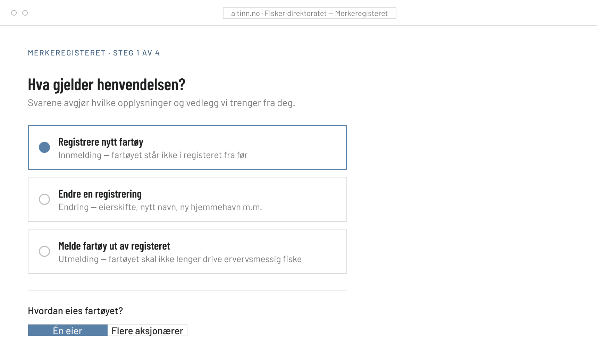
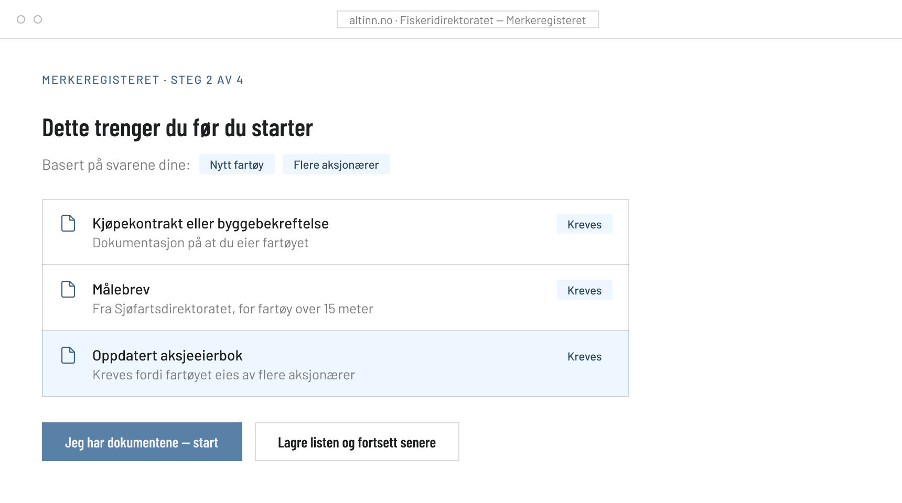
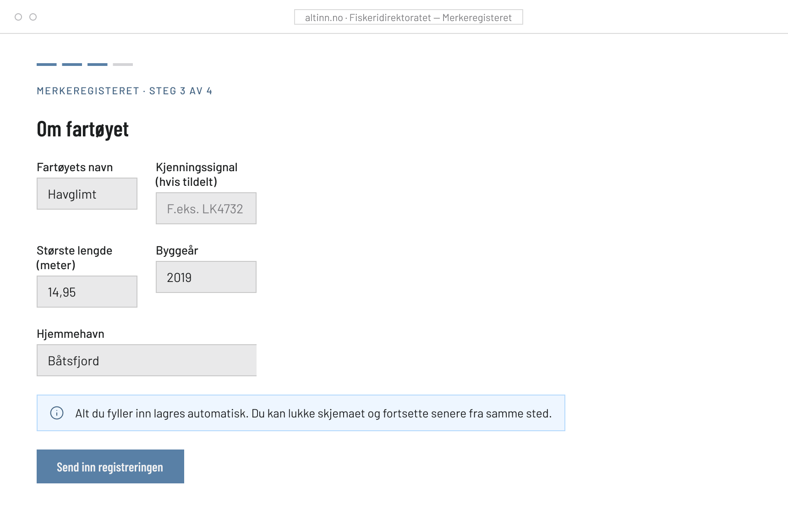
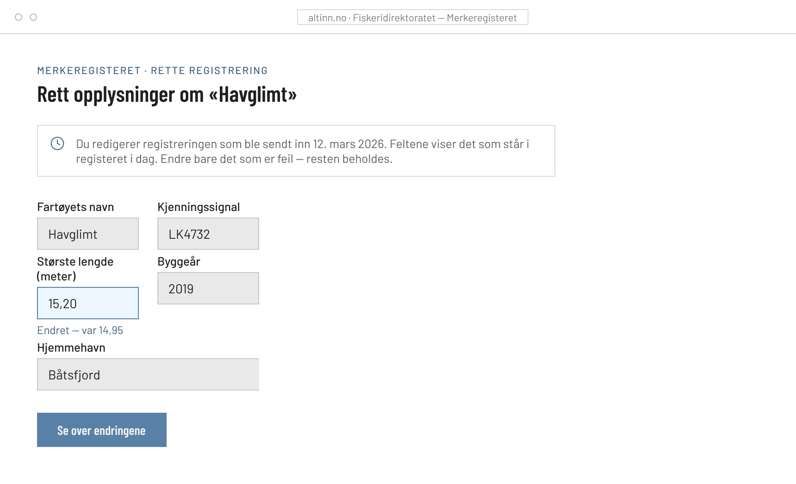
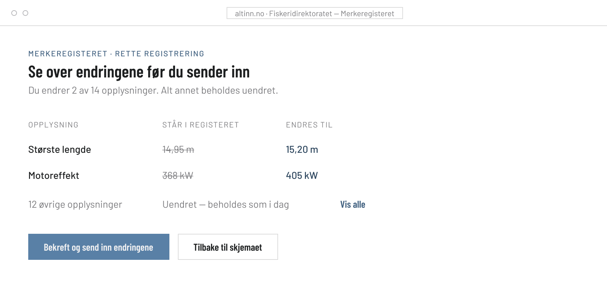

Redesigning the Merkeregister registration flow — the Norwegian Directorate of Fisheries' form for registering, updating and deregistering commercial fishing vessels.
View the interactive prototype in Figma →Merkeregisteret is Fiskeridirektoratet's official registry of commercial fishing vessels. Owners must register a vessel (innmelding), report changes (endring) or deregister it (utmelding) through a generic government form on Altinn.
The people filling it in are vessel owners or their representatives. They do this occasionally, not routinely. Many are not digitally fluent, and none of them have the form's mental model memorised between uses.
The form itself works. Two things about it don't.
Some situations require documentation — for example an updated shareholder register (aksjeeierbok), but only in certain ownership-change scenarios. Today this rule lives in a dense legal paragraph. Users discover what they needed after starting, or after a rejected submission.
To correct a submission you duplicate the old one and resubmit. The new submission replaces the old — entirely. Miss a field while re-entering, and correct data is lost without warning.
Requirements are stated as instructions, not statute.
A short situation step up front routes each user to only the questions and attachments their case requires.
Corrections start from the submitted record, pre-filled. Every change is shown old-versus-new.
Instead of one generic form, registration opens with two or three plain questions about the user's situation. Screens below are from the clickable Figma prototype.

A short pre-form step in everyday Norwegian. The ownership question is what the current form hides in paragraph text — here it's just a question.

The complete, personalised documentation list — before a single form field.

Short steps, visible progress, every field labelled in plain Norwegian.
The redesign treats a correction as an edit of the existing record, with an explicit review of every change before anything is overwritten.

Editing opens the submitted record, not an empty duplicate.

Before final submission, a diff: old value against new value for every changed field.
Body text and form labels hold at least 7:1 against the background (WCAG 1.4.6 AAA).
Errors say what to do, appear beside the field they concern (WCAG 3.3.1, 3.3.3).
Every input has a programmatically associated, permanently visible label (WCAG 1.3.1, 3.3.2).
A visible focus ring is never removed (WCAG 2.4.3, 2.4.7).
This is a concept project, so its biggest assumptions are untested. With real vessel owners I'd want to verify the situation questions use words they'd use themselves, and that the upfront checklist reduces abandoned submissions. With Fiskeridirektoratet's caseworkers I'd want to check whether the change-summary format matches how they actually review corrections.